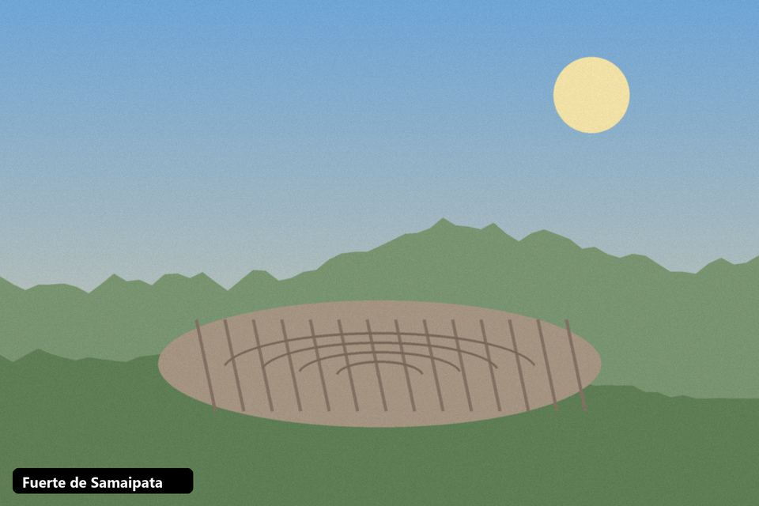
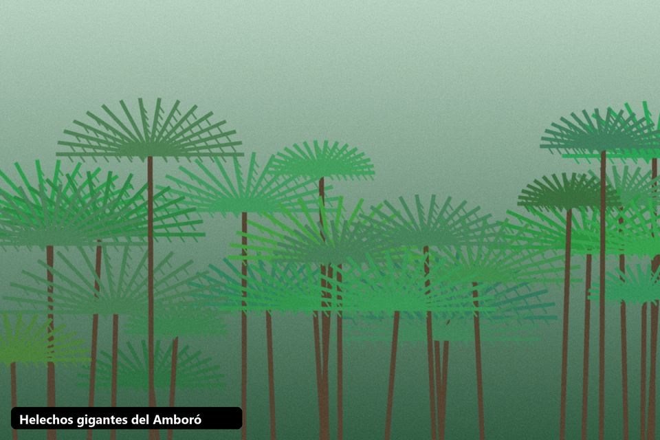
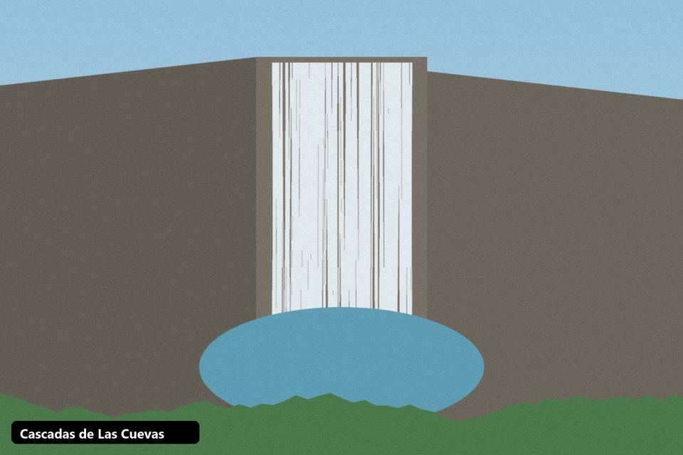
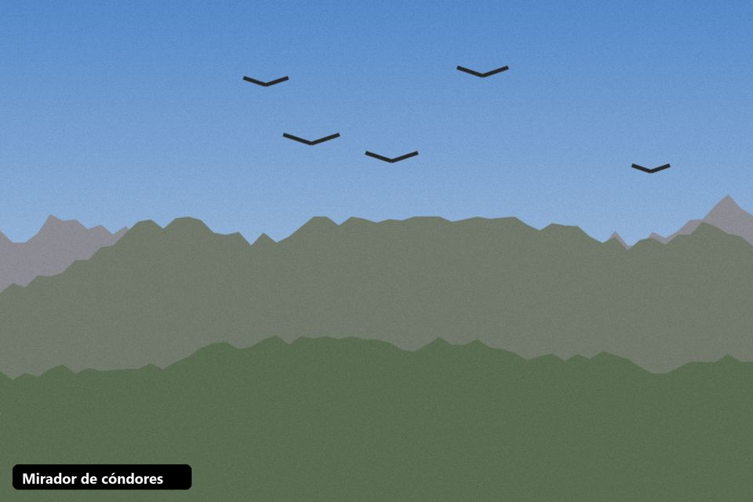
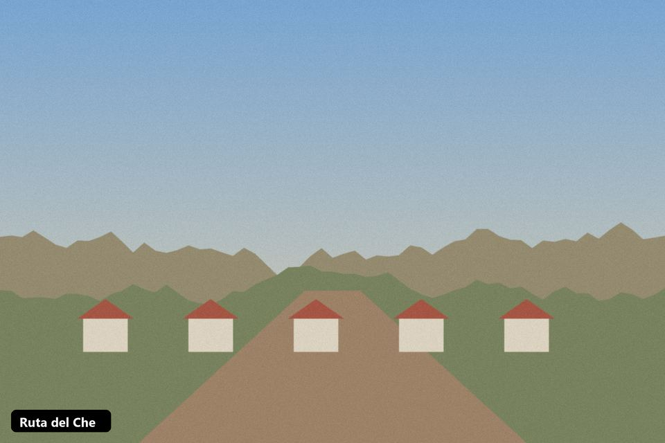
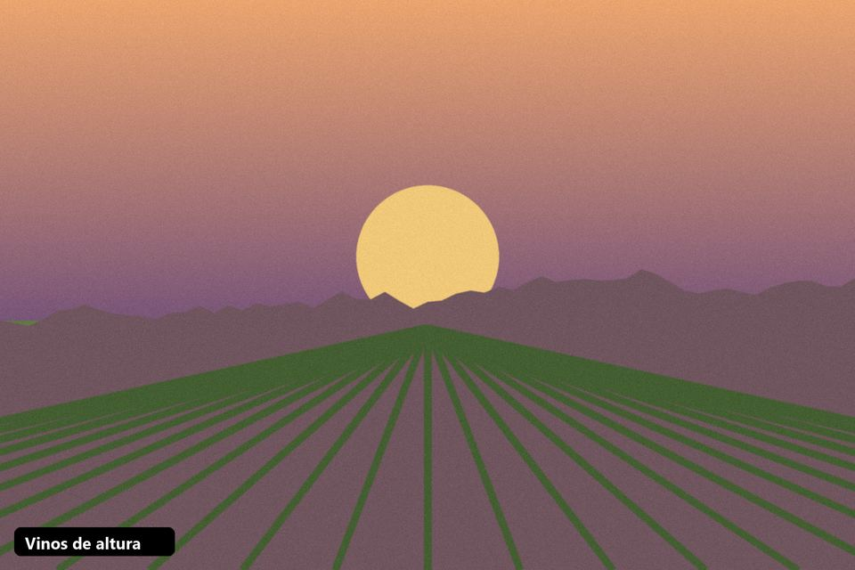

Galería
Una muestra de los paisajes que vas a recorrer con nosotros. Las imágenes son ilustraciones; pronto las reemplazaremos por fotos de nuestros viajeros.
Fuerte de Samaipata

Bosque de helechos gigantes

Cascadas de Las Cuevas

Mirador de cóndores

Ruta del Che

Tarde de vinos y sabores
